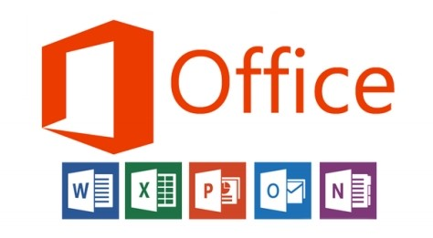

Microsoft Office is a suite of desktop productivity applications that is designed specifically to be used for office or business use. It is a proprietary product of Microsoft Corporation and was first released in 1990. Microsoft Office is available in 35 different languages and is supported by Windows, Mac and most Linux variants. It mainly consists of Word, Excel, PowerPoint, Access, OneNote, Outlook and Publisher applications

Techopedia explains Microsoft Office Microsoft Office was primarily created to automate the manual office work with a collection of purpose-built applications.
Each of the applications in Microsoft Office serves as specific knowledge or office domain such as:
Microsoft Word: Helps users in creating text documents
Microsoft Excel: Creates simple to complex data/numerical spreadsheets.
Microsoft PowerPoint: Stand-alone application for creating professional multimedia presentations..
Microsoft Access: Database management application.
Microsoft Publisher: Introductory application for creating and publishing marketing materials.
Microsoft OneNote: Alternate to a paper notebook, it enables a user to neatly organize their notes. Besides desktop applications, Microsoft Office is available to use online or from cloud under a lighter (Office Web Apps) and full (Office 365) version. As of 2013, Microsoft Office 2013 is the latest version, available in 4 different variants including Office Home Student 2013, Office Home Business 2013 and Office Professional 2 and the online/cloud Office 365 Home Premium.